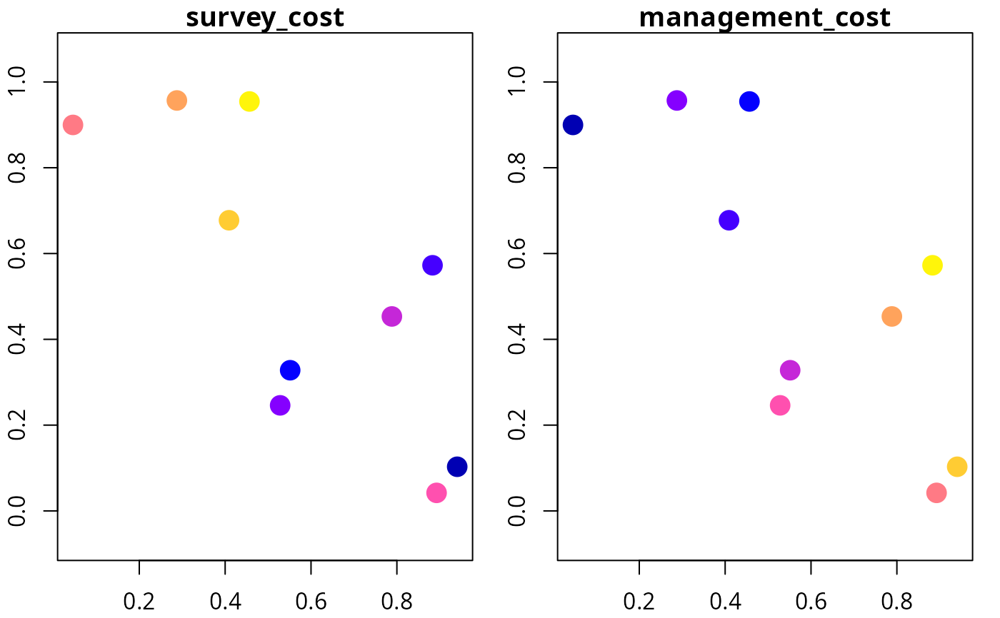
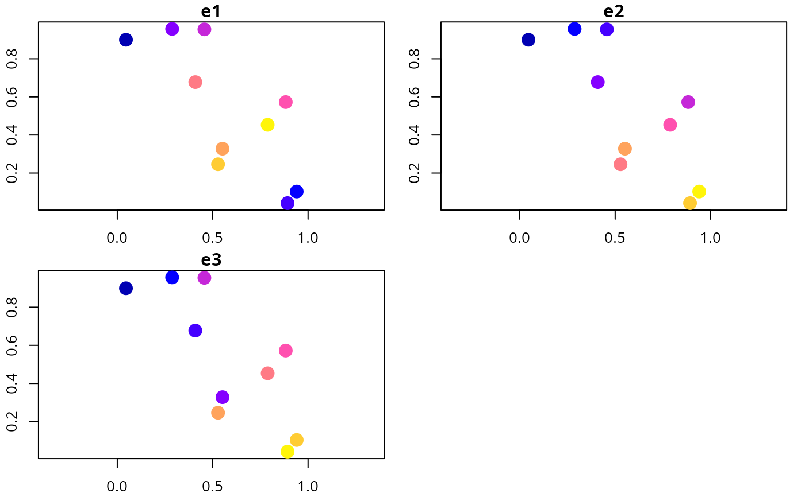
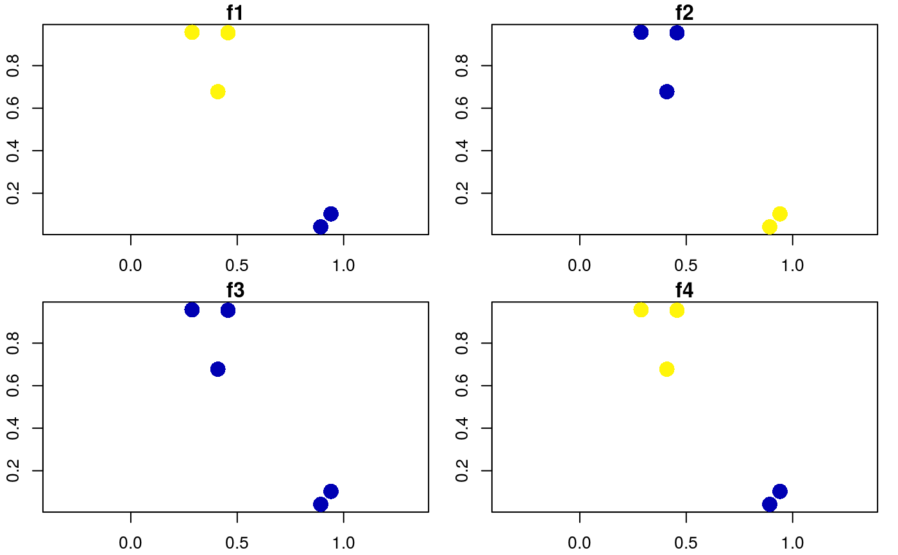
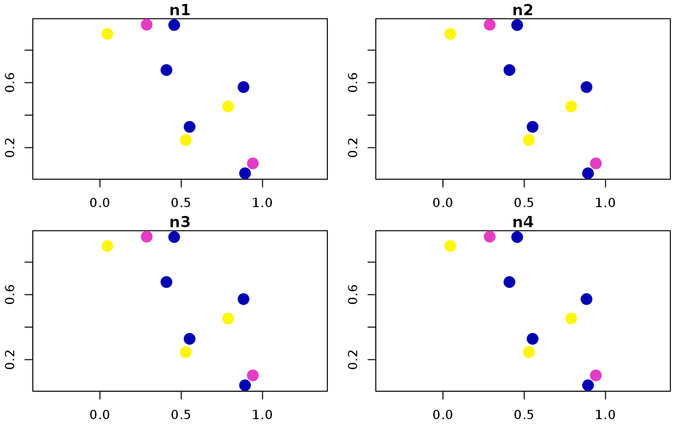
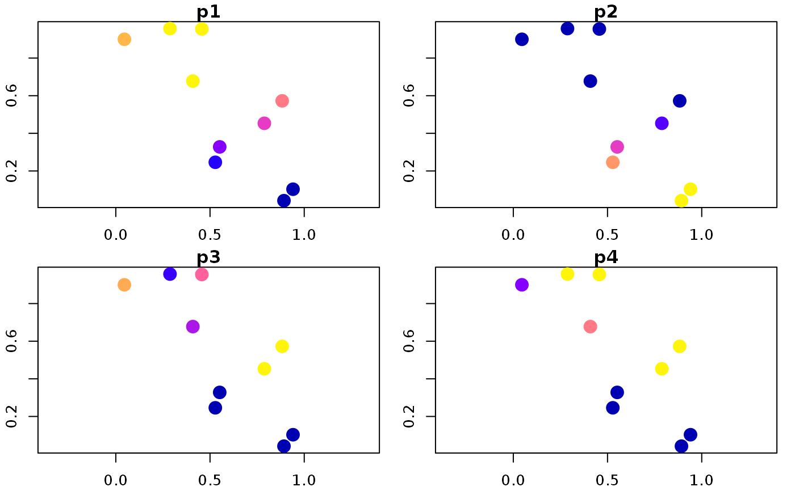

Simulate site data for developing simulated survey schemes.
simulate_site_data(
n_sites,
n_features,
proportion_of_sites_missing_data,
n_env_vars = 3,
survey_cost_intensity = 20,
survey_cost_scale = 5,
management_cost_intensity = 100,
management_cost_scale = 30,
max_number_surveys_per_site = 5,
output_probabilities = TRUE
)integer number of sites.
integer number of features.
numeric proportion of sites
that do not have existing presence/absence data. Values must be between
zero and one.
integer number of environmental variables for
simulating feature distributions. Defaults to 3.
numeric intensity of the costs of
surveying sites. Larger values correspond to larger costs on average.
Defaults to 20.
numeric value corresponding to
the spatial homogeneity of the survey costs. Defaults to 5.
numeric intensity of the costs of
average cost of managing sites for conservation. Defaults to 100.
numeric value corresponding to
the spatial homogeneity of the survey costs. Defaults to 30.
integer maximum number of
surveys per site in the simulated data. Defaults to 5.
logical value indicating if
probability values of occupancy should be output or not. Defaults
to TRUE.
A sf::sf() object with site data.
The "management_cost" column contains the site protection costs,
and the "survey_cost" column contains the costs for surveying
each site.
Additionally, columns that start with
(i) "f" (e.g. "f1") contain the proportion of
times that each feature was detected in each site,
(ii) "n" (e.g. "n1") contain the number of
of surveys for each feature within each site,
(iii) "p" (e.g. "p1") contain prior
probability data, and
(iv) "e" (e.g. "e1") contain environmental
data. Note that columns that contain the same integer value (excepting
environmental data columns) correspond to the same feature
(e.g. "d1", "n1", "p1" contain data that correspond
to the same feature).
# set seed for reproducibility
set.seed(123)
# simulate data
d <- simulate_site_data(n_sites = 10, n_features = 4, prop = 0.5)
# print data
print(d, width = Inf)
#> Simple feature collection with 10 features and 17 fields
#> Geometry type: POINT
#> Dimension: XY
#> Bounding box: xmin: 0.0455565 ymin: 0.04205953 xmax: 0.9404673 ymax: 0.9568333
#> CRS: NA
#> # A tibble: 10 × 18
#> survey_cost management_cost f1 f2 f3 f4 n1 n2 n3 n4
#> <dbl> <dbl> <dbl> <dbl> <dbl> <dbl> <dbl> <dbl> <dbl> <dbl>
#> 1 26 68 1 0 0 1 3 3 3 3
#> 2 22 93 0 0 0 0 0 0 0 0
#> 3 23 69 1 0 0 1 1 1 1 1
#> 4 22 78 1 0 0 1 3 3 3 3
#> 5 18 81 0 0 0 0 0 0 0 0
#> 6 30 49 0 0 1 1 2 2 2 2
#> 7 23 125 0 0 0 0 0 0 0 0
#> 8 11 103 0 0 0 0 0 0 0 0
#> 9 25 68 0 0 0 0 0 0 0 0
#> 10 21 137 1 0 0 0.4 5 5 5 5
#> e1 e2 e3 p1 p2 p3 p4 geometry
#> <dbl> <dbl> <dbl> <dbl> <dbl> <dbl> <dbl> <POINT>
#> 1 -0.145 -0.995 -0.223 0.998 0.004 0.091 0.993 (0.2875775 0.9568333)
#> 2 0.884 0.0440 0.0843 0.949 0.113 0.074 0 (0.7883051 0.4533342)
#> 3 0.794 -0.627 -0.637 0.957 0 0.134 0.993 (0.4089769 0.6775706)
#> 4 0.297 -0.540 -0.402 0.929 0 0.24 0.992 (0.8830174 0.5726334)
#> 5 -1.45 1.65 1.21 0 1 0.994 0 (0.9404673 0.1029247)
#> 6 -1.45 -1.13 -1.22 0.024 0 0.99 1 (0.0455565 0.899825)
#> 7 0.878 0.222 0.312 0.956 0.894 0.059 0 (0.5281055 0.2460877)
#> 8 -1.23 1.42 2.08 0.35 1 0.555 0 (0.892419 0.04205953)
#> 9 0.731 0.761 -0.990 0 0 0.991 1 (0.551435 0.3279207)
#> 10 0.685 -0.814 -0.211 0.999 0 0.02 0.117 (0.4566147 0.9545036)
# plot cost data
plot(d[, c("survey_cost", "management_cost")], axes = TRUE, pch = 16,
cex = 2)

# plot environmental data
plot(d[, c("e1", "e2", "e3")], axes = TRUE, pch = 16, cex = 2)

# plot feature detection data
plot(d[, c("f1", "f2", "f3", "f4")], axes = TRUE, pch = 16, cex = 2)

# plot feature survey effort
plot(d[, c("n1", "n2", "n3", "n4")], axes = TRUE, pch = 16, cex = 2)

# plot feature prior probability data
plot(d[, c("p1", "p2", "p3", "p4")], axes = TRUE, pch = 16, cex = 2)
